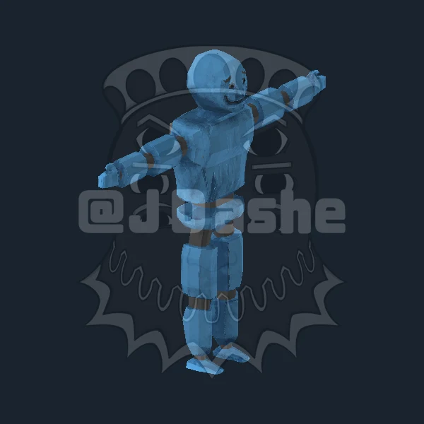
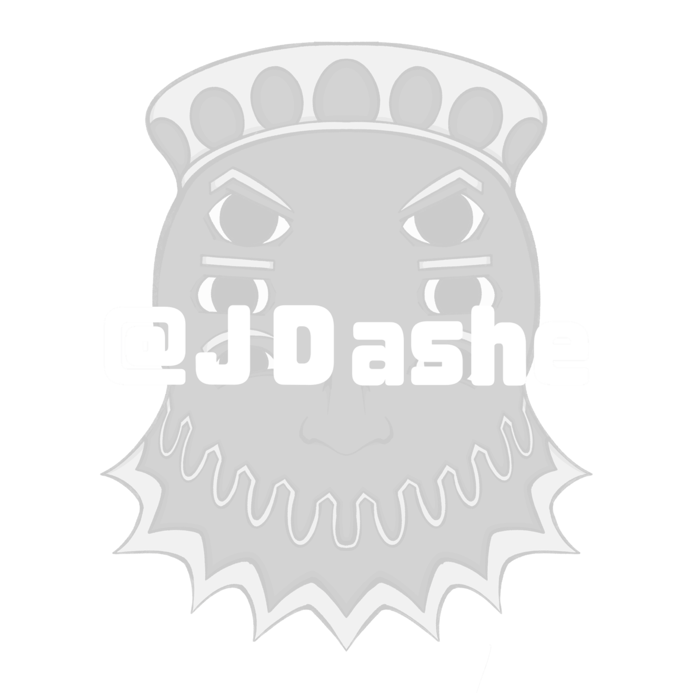

Personajes, objetos y escenarios: mis ideas toman forma en 3D. Explora trabajos de distintos proyectos, acércate a sus detalles y descubre cómo están construidos.
Robot


Arrastra para girar · Rueda o pellizco para acercar · Botón derecho o dos dedos para desplazar. El giro se reanuda tras 5 segundos sin interacción.
Wireframe muestra los triángulos de la malla exportada.